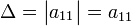
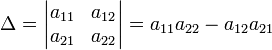
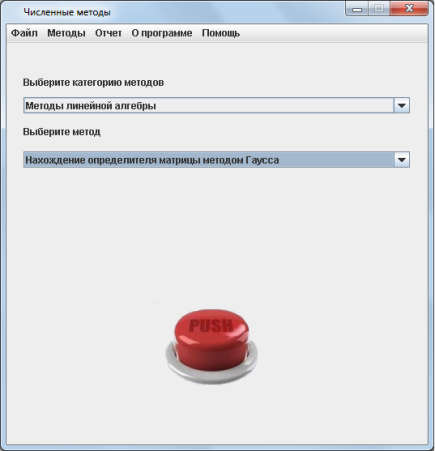
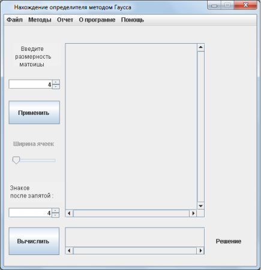
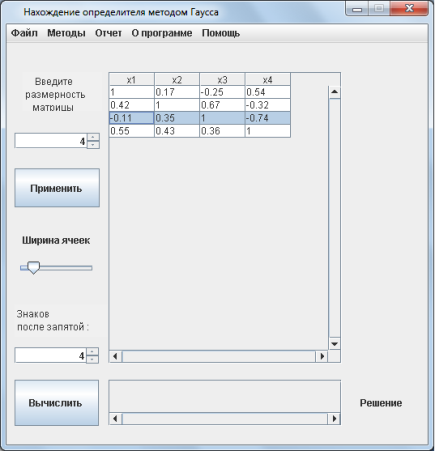
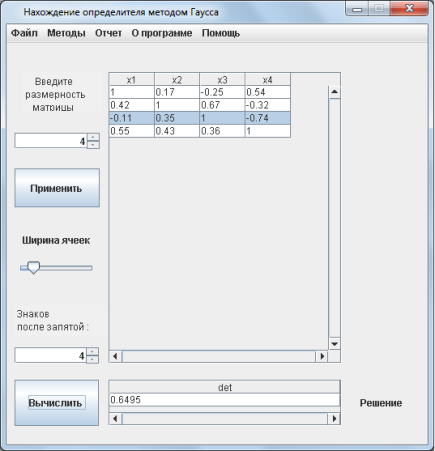

Нахождение определителя матрицы
Практическая часть
Теоретическая часть
Определитель - одно из основных понятий линейной алгебры. Определитель матрицы
A является многочленом от элементов матрицы. Определитель
можно найти только у квадратной матрицы, то есть у такой, у которой количество строк равно количеству столбцов
(n = m). Определитель обозначается как:
det(A), |А| или .
Определителем для матрицы первого порядка (n = 1) является единственный эелемент этой матрицы:
Для матрицы второго порядка (n = 2) определитель определяется так:
Чтобы найти определитель матриц более высокого порядка можно воспользоваться методом Гаусса. Это не единственный метод нахождения определителя, но он считается одним из наиболее быстрых. Нужно привести матрицу к треугольному(ступенчатому) виду, то есть получить нули под главной диагональю, используя всего две опереации над матрицей:
Определителем для матрицы первого порядка (n = 1) является единственный эелемент этой матрицы:

Для матрицы второго порядка (n = 2) определитель определяется так:

Чтобы найти определитель матриц более высокого порядка можно воспользоваться методом Гаусса. Это не единственный метод нахождения определителя, но он считается одним из наиболее быстрых. Нужно привести матрицу к треугольному(ступенчатому) виду, то есть получить нули под главной диагональю, используя всего две опереации над матрицей:
-
1) перестановку двух строк;
2) добавление к одной из строк матрицы другой строки, умноженной на произвольное число
Практическая часть
Пошаговые действия |
Пояснения к действиям |
|  | 1. Заходим в программу. Появляется окно, показанное на рисунке. Выбираем категорию методов "Методы линейной алгебры" Выбираем метод "Нахождение определителя матрицы методом Гаусса". Нажимаем кнопку "PUSH". |
|  | 2. Появляется окошко, показнное на рисунке слева. В соответсвующем поле вы задаете размерность матрицы и количество знаков после запятой в корнях уравнений, которые получатся после решения системы. После чего необходимо нажать кнопку "Применить". |
|  | 3. На следующем этапе появляется таблица для ввода матрицы коэффициентов при неизвестных. Название столбцов подсказывает нам какие ячейки соответствуют неизвестным. Также можно выбрать ширину ячеек будущей таблицы для наглядности. После того, как все данные были введены нужно нажать кнопку "Вычислить". |
|  | 4. После выполнения всех действий, описанных выше, внизу экранной формы в поле "Решение" программа выведет определитель матрицы. |
 |
5. После того, как вы получили ответ, можно просмотреть отчет, где предоставлено поэтапное решение. Для этого необходимо в главном меню программы, расположенном на верху экранной формы выбрать пункт "Отчет/Просмотр отчета". Вы увидите окно, расположенное слева. Также можно сохранить этот отчет нажав кнопку главного меню "Отчет/Сохранить отчет". |
 |
6. Если решение примера может пригодится вам в будущем, вы можете сохранить его с помощью конпки меню "Файл/Сохранить". В окне, которое появится(оно показано на рисунке слева) необходимо выбрать папку, в которую он сохранится и написать название. |